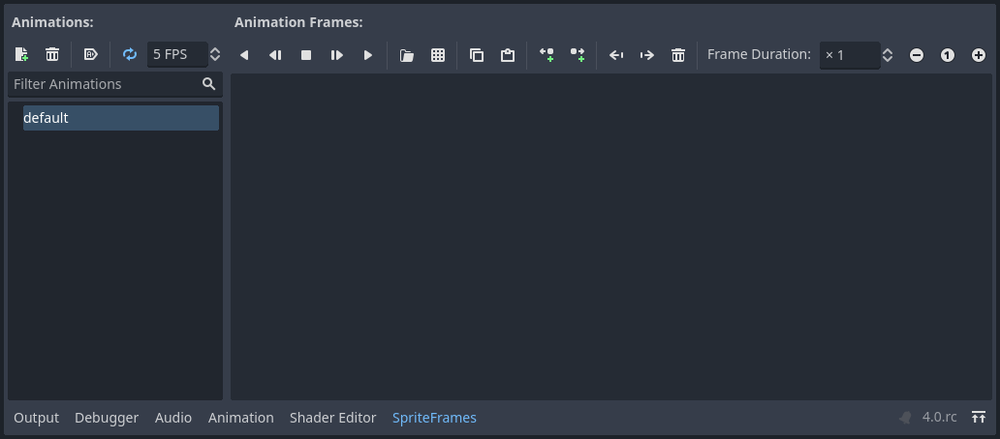
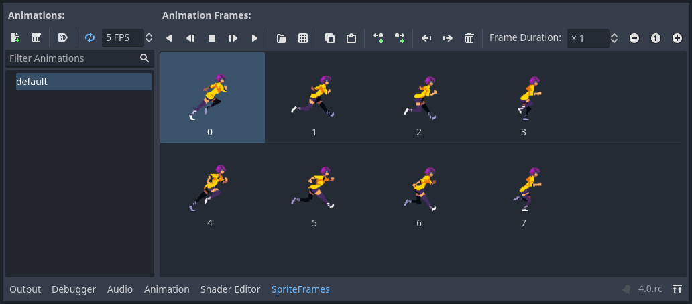
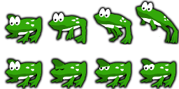
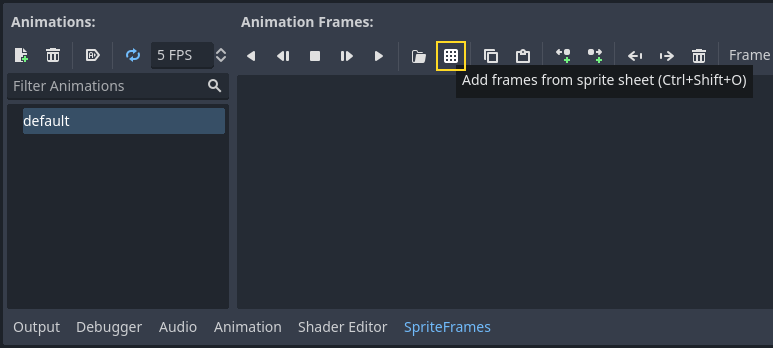
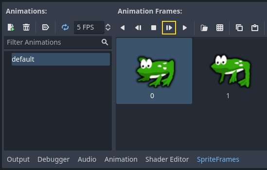
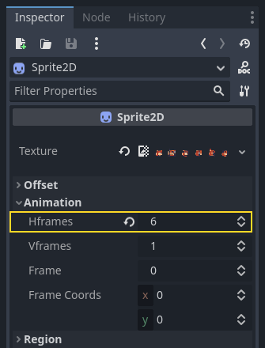
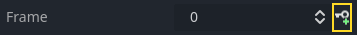

2D sprite animation
Introduction
In this tutorial, you'll learn how to create 2D animated characters with the AnimatedSprite2D class and the AnimationPlayer. Typically, when you create or download an animated character, it will come in one of two ways: as individual images or as a single sprite sheet containing all the animation's frames. Both can be animated in Godot with the AnimatedSprite2D class.
First, we'll use AnimatedSprite2D to animate a collection of individual images. Then we will animate a sprite sheet using this class. Finally, we will learn another way to animate a sprite sheet with AnimationPlayer and the Animation property of Sprite2D.
Note
Art for the following examples by https://opengameart.org/users/ansimuz and tgfcoder.
Individual images with AnimatedSprite2D
In this scenario, you have a collection of images, each containing one of your character's animation frames. For this example, we'll use the following animation:

You can download the images here: 2d_sprite_animation_assets.zip
Unzip the images and place them in your project folder. Set up your scene tree with the following nodes:

Note
The root node could also be Area2D or RigidBody2D. The animation will still be made in the same way. Once the animation is completed, you can assign a shape to the CollisionShape2D. See Physics Introduction for more information.
Now select the AnimatedSprite2D and in its SpriteFrames property, select
"New SpriteFrames".
Click on the new SpriteFrames resource and you'll see a new panel appear at the bottom of the editor window:

From the FileSystem dock on the left side, drag the 8 individual images into the center part of the SpriteFrames panel. On the left side, change the name of the animation from "default" to "run".

Use the "Play" buttons on the top-right of the Filter Animations input to preview the animation. You should now see the animation playing in the viewport. However, it is a bit slow. To fix this, change the Speed (FPS) setting in the SpriteFrames panel to 10.
You can add additional animations by clicking the "Add Animation" button and adding additional images.
Controlling the animation
Once the animation is complete, you can control the animation via code using
the play() and stop() methods. Here is a brief example to play the
animation while the right arrow key is held, and stop it when the key is
released.
extends CharacterBody2D
@onready var _animated_sprite = $AnimatedSprite2D
func _process(_delta):
if Input.is_action_pressed("ui_right"):
_animated_sprite.play("run")
else:
_animated_sprite.stop()
using Godot;
public partial class Character : CharacterBody2D
{
private AnimatedSprite2D _animatedSprite;
public override void _Ready()
{
_animatedSprite = GetNode<AnimatedSprite2D>("AnimatedSprite2D");
}
public override void _Process(double delta)
{
if (Input.IsActionPressed("ui_right"))
{
_animatedSprite.Play("run");
}
else
{
_animatedSprite.Stop();
}
}
}
Sprite sheet with AnimatedSprite2D
You can also easily animate from a sprite sheet with the class AnimatedSprite2D.
We will use this public domain sprite sheet:

Right-click the image and choose "Save Image As" to download it, and then copy the image into your project folder.
Set up your scene tree the same way you did previously when using individual images.
Select the AnimatedSprite2D and in its SpriteFrames property, select "New SpriteFrames".
Click on the new SpriteFrames resource. This time, when the bottom panel appears, select "Add frames from a Sprite Sheet".

You will be prompted to open a file. Select your sprite sheet.
A new window will open, showing your sprite sheet. The first thing you will need to do is to change the number of vertical and horizontal images in your sprite sheet. In this sprite sheet, we have four images horizontally and two images vertically.
Next, select the frames from the sprite sheet that you want to include in your animation. We will select the top four, then click "Add 4 frames" to create the animation.
You will now see your animation under the list of animations in the bottom panel. Double click on default to change the name of the animation to jump.
Finally, check the play button on the SpriteFrames editor to see your frog jump!

Sprite sheet with AnimationPlayer
Another way that you can animate when using a sprite sheet is to use a standard Sprite2D node to display the texture, and then animating the change from texture to texture with AnimationPlayer.
Consider this sprite sheet, which contains 6 frames of animation:

Right-click the image and choose "Save Image As" to download, then copy the image into your project folder.
Our goal is to display these images one after another in a loop. Start by setting up your scene tree:

Note
The root node could also be Area2D or RigidBody2D. The animation will still be made in the same way. Once the animation is completed, you can assign a shape to the CollisionShape2D. See Physics Introduction for more information.
Drag the spritesheet into the Sprite's Texture property, and you'll see the
whole sheet displayed on the screen. To slice it up into individual frames,
expand the Animation section in the Inspector and set the Hframes to 6.
Hframes and Vframes are the number of horizontal and vertical frames in
your sprite sheet.

Now try changing the value of the Frame property. You'll see that it ranges
from 0 to 5 and the image displayed by the Sprite2D changes accordingly.
This is the property we'll be animating.
Select the AnimationPlayer and click the "Animation" button followed by
"New". Name the new animation "walk". Set the animation length to 0.6 and
click the "Loop" button so that our animation will repeat.

Now select the Sprite2D node and click the key icon to add a new track.

Continue adding frames at each point in the timeline (0.1 seconds by
default), until you have all the frames from 0 to 5. You'll see the frames
actually appearing in the animation track:

Press "Play" on the animation to see how it looks.

Controlling an AnimationPlayer animation
Like with AnimatedSprite2D, you can control the animation via code using
the play() and stop() methods. Again, here is an example to play the
animation while the right arrow key is held, and stop it when the key is
released.
extends CharacterBody2D
@onready var _animation_player = $AnimationPlayer
func _process(_delta):
if Input.is_action_pressed("ui_right"):
_animation_player.play("walk")
else:
_animation_player.stop()
using Godot;
public partial class Character : CharacterBody2D
{
private AnimationPlayer _animationPlayer;
public override void _Ready()
{
_animationPlayer = GetNode<AnimationPlayer>("AnimationPlayer");
}
public override void _Process(double delta)
{
if (Input.IsActionPressed("ui_right"))
{
_animationPlayer.Play("walk");
}
else
{
_animationPlayer.Stop();
}
}
}
Note
If updating both an animation and a separate property at once
(for example, a platformer may update the sprite's h_flip/v_flip
properties when a character turns while starting a 'turning' animation),
it's important to keep in mind that play() isn't applied instantly.
Instead, it's applied the next time the AnimationPlayer is processed.
This may end up being on the next frame, causing a 'glitch' frame,
where the property change was applied, but the animation was not.
If this turns out to be a problem, after calling play(), you can call advance(0)
to update the animation immediately.
Summary
These examples illustrate the two classes you can use in Godot for 2D animation.
AnimationPlayer is a bit more complex than AnimatedSprite2D,
but it provides additional functionality, since you can also
animate other properties like position or scale.
The class AnimationPlayer can also be used with an AnimatedSprite2D.
Experiment to see what works best for your needs.